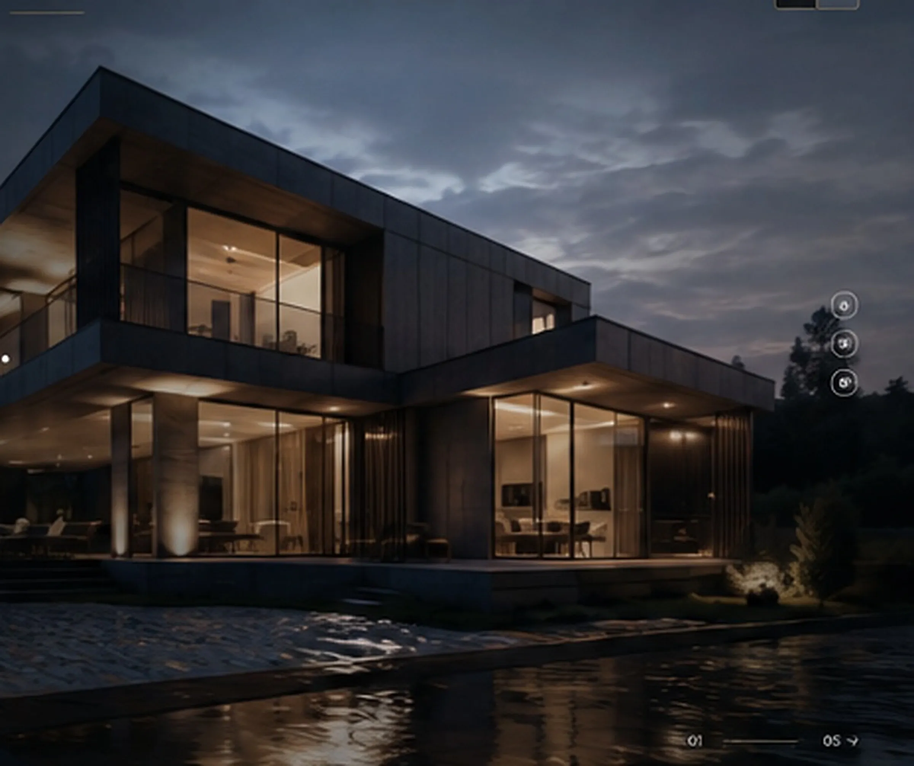
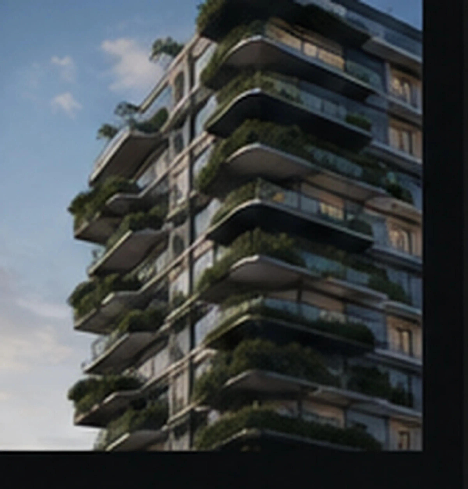

Architecture.Execution.Development.
We design with vision, execute with precision, and develop projects for long-term value.
Building with Purpose and Precision.
ARNO is a multidisciplinary architecture, construction, development and education group. Our focus is connecting design decisions to buildability and project economics.
 Construction detail — ARNO projects
Construction detail — ARNO projects
Identity, plans and permits — from concept to detail.
Precise site work with documented quality control.
Development partnerships that grow asset value.
Project-led education for construction professionals.
Our Work Should Speak for Itself.

Integrated Solutions for the Built Environment.
 01
01Architecture Design
From site analysis and program to concept, detailed design, façade and interiors.
Construction & Delivery
Construction management, procurement, quality control and documented handover.
 03
03Qualified Executor
Technical execution and accountable delivery within project-specific legal authorizations.
 04
04Project Supervision & QC
Execution reviews, inspection points, QC reporting and corrective-action tracking.

05Development & Partnership
Feasibility, project economics, partnership structuring and value development.
Renovation
Redesign, budgeting, MEP coordination, procurement and integrated execution.
 07
07Engineering Services
Surveying, laboratory coordination, BMS, documentation and project services.
 08
08ARNO Academy
Project-led construction education using real workflows, checklists and case studies.
We don’t just build structures; we build trust, clarity and long-term value.ARNO Engineers Group
Knowledge from Experience.
Project-led construction education for engineers, owners and industry professionals, using checklists, case studies and real decision workflows.
Insights, Ideas and Expertise.


From Concept to Creation.
Consult
Brief, goals, constraints and delivery model.
Design
Architecture, coordination and buildability.
Plan
Cost, time, procurement and control gates.
Execute
Site coordination, QC and reporting.
Handover
Punch list, records and closure.
Great projects are coordinated across disciplines.
From concept and plans to façades and details.
Safe, economical and buildable structural systems.
Mechanical, electrical and plumbing alignment.
Accurate site capture and correct setting-out.
Material testing and on-site quality control.
BMS and building automation systems.